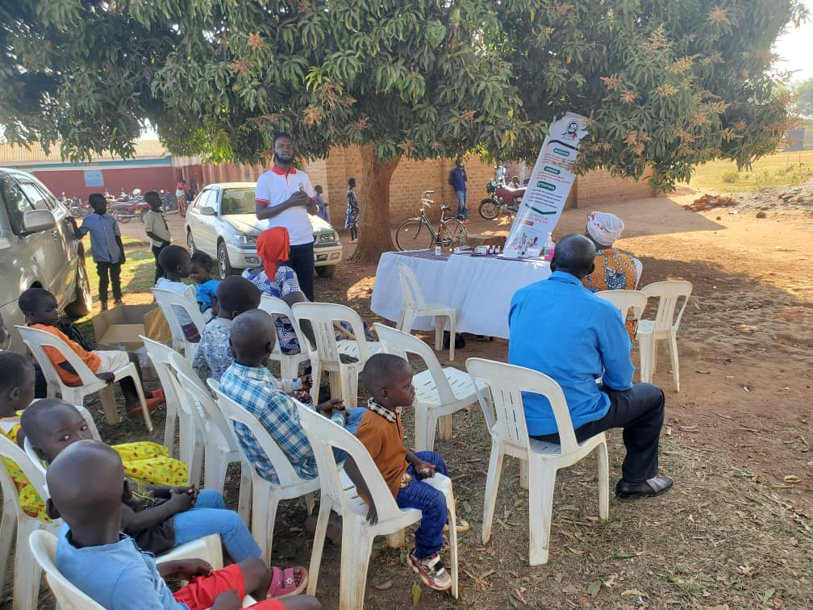
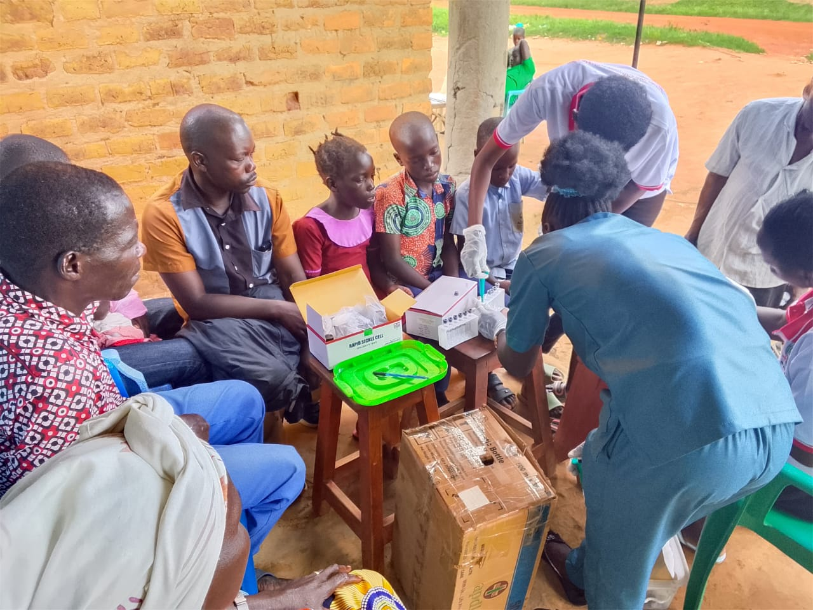
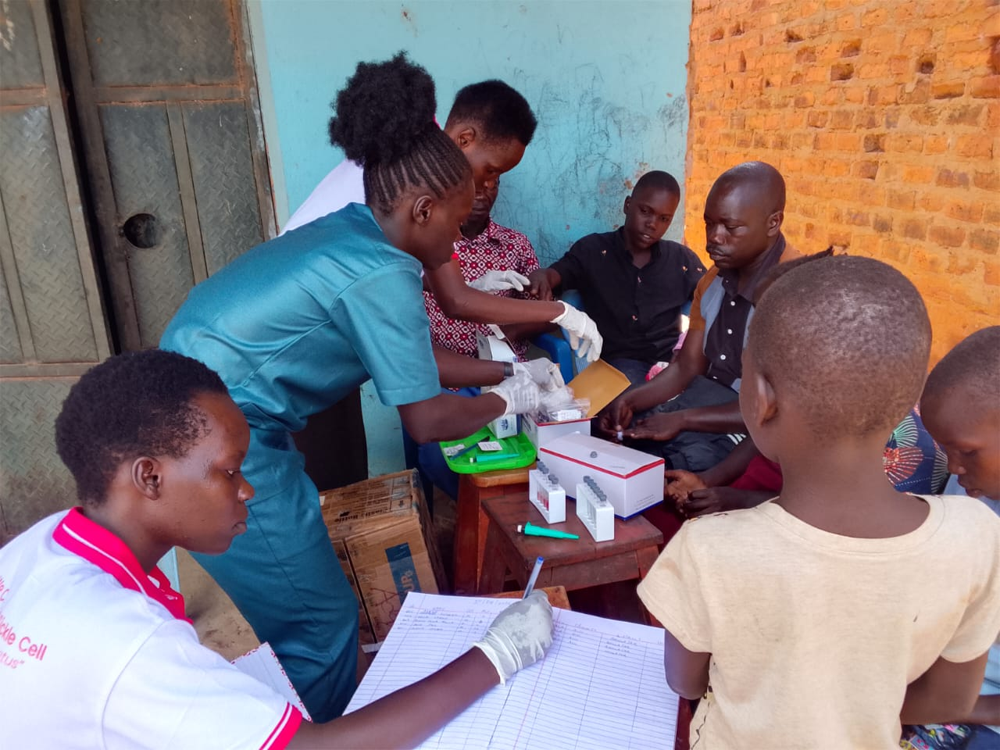
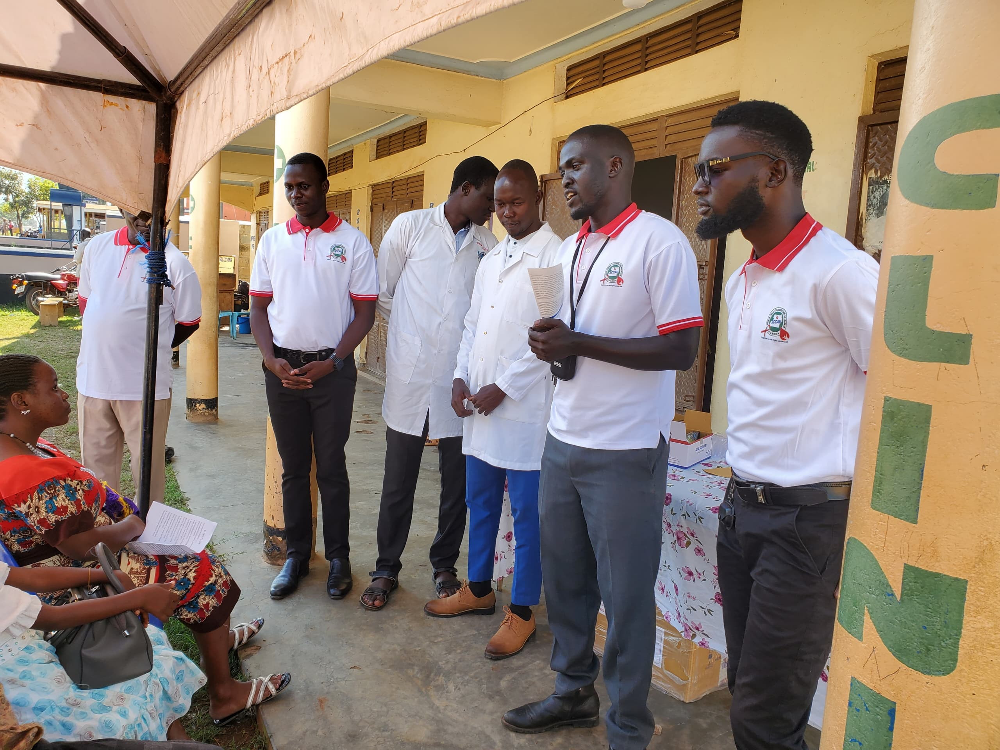

Direct Intervention
A Holistic Approach to
A Holistic Approach to
Sickle Cell Care
We bridge the gap between early clinical diagnosis and long-term community resilience through five strategic pillars.

Clinical Excellence
Clinical Awareness & Early Screening
Facilitating early diagnosis through advanced screening and strengthening linkages between local health centers and warriors.
- ✓ Health worker capacity building
- ✓ Strengthening referral linkages
- ✓ Lab-based diagnostic excellence

Grassroots Impact
Taking healthcare to the people through intensive door-to-door testing campaigns and educational seminars.
- ✓ Door-to-door screening drives
- ✓ School SCD awareness seminars
- ✓ Marketplace community testing

Holistic Care
Providing emotional, logistical, and emergency financial support for warriors, including nutritional aid.
- ✓ Post-diagnosis family counseling
- ✓ Emergency medical & nutrition fund
- ✓ Peer-led support groups
Warrior Resilience
We shall empower the youth with vocational toolkits and mentorship programs to ensure financial independence.
- ✓ Vocational toolkit distribution
- ✓ Survivor-led mentorship
- ✓ Financial literacy training

National Impact
Engaging stakeholders to integrate Sickle Cell care into national health priorities and district-level budgets.
- ✓ District-level health advocacy
- ✓ National Alliance partnerships
- ✓ Policy research and reporting